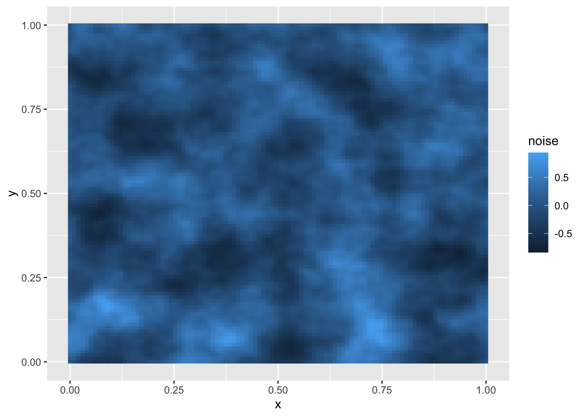
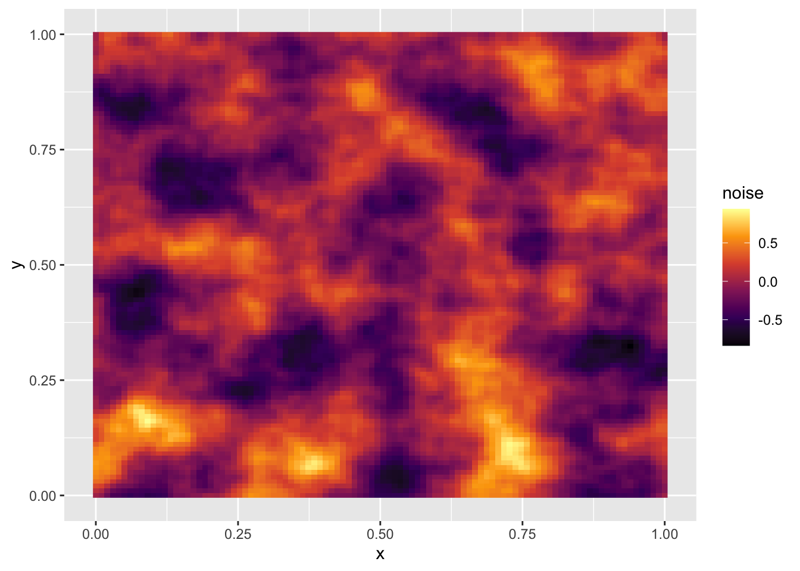
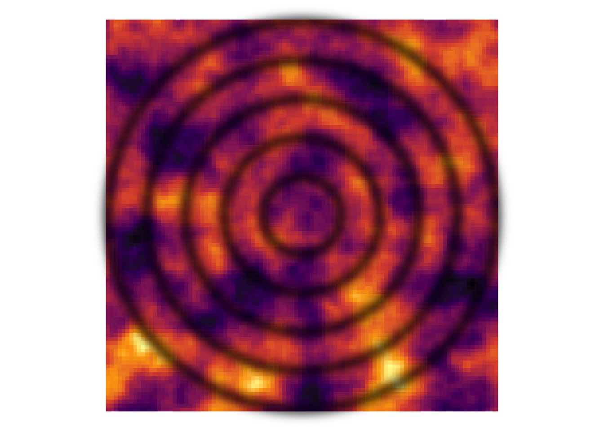
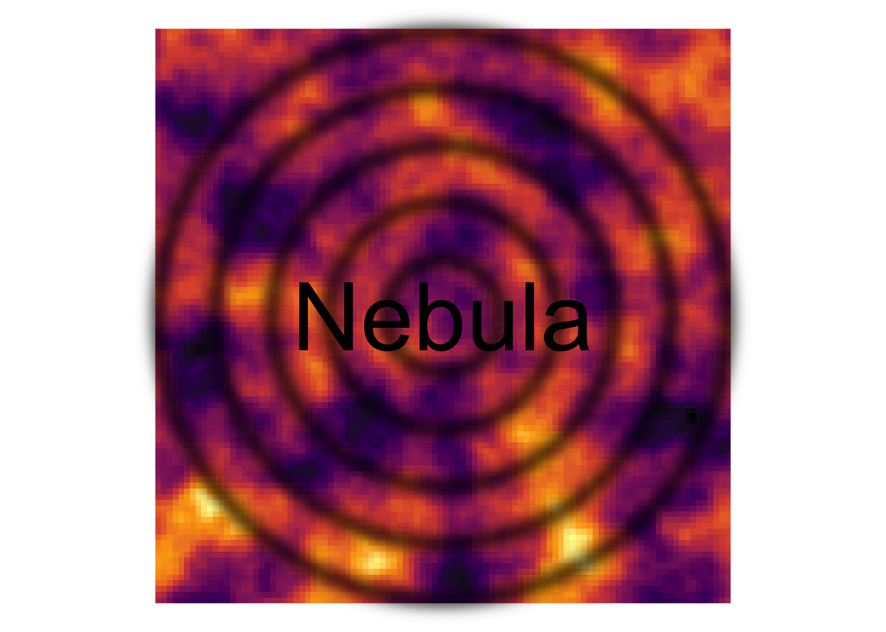
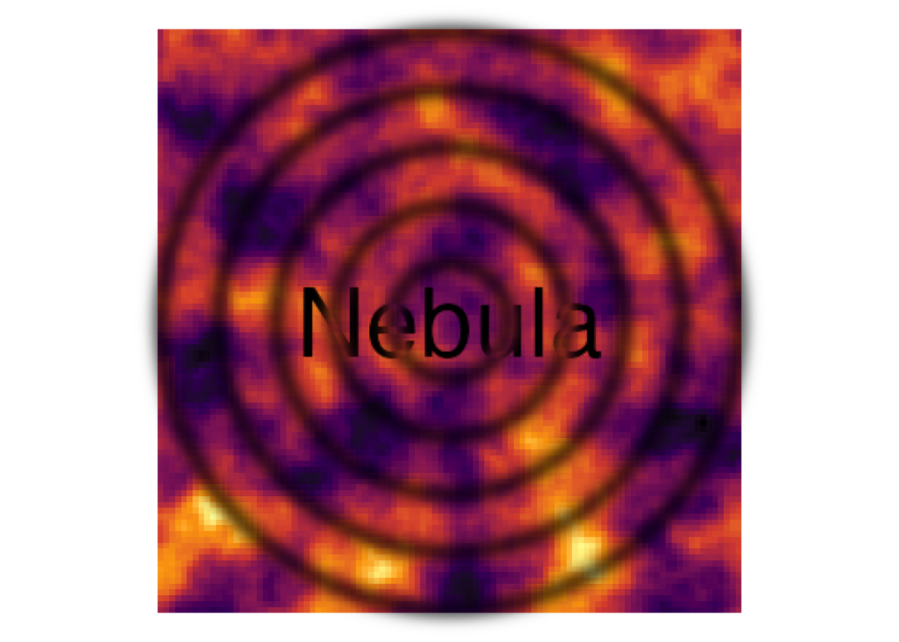

Recently I made a logo for my in-development nebula package. This is how it’s done.
Before I get into this post, I need to point out that all the work in this stands on the shoulders of the incredible developer, Thomas Lin Pedersen. The work here heavily relies on his ambient and ggfx packages, so most credit is due to him.
My nebula package is designed to help interactively age fish through counting the growth rings present in their ‘otoliths’ (ear bones). As an example, see the image below of an otolith I collected from a New Zealand Galaxias maculatus.
This otolith is approx 0.5mm across, and each ring one day of growth in the fish (so this fish is approx 120 days old).
The reason nebula is named so, is that the rings of an otolith remind me of the rings sometimes seen in nebulas.

Image from NASA Jet Propulsion Laboratory
With these thoughts in mind, I wanted a logo representing the void-y, almost cloud like nature of nebulas, along with the rings from an otolith. To do this, I started with ambient.
Following Thomas’ examples, I started by generating a grid of values, and then adding some perlin noise to it (note that I am not showing the seed I used to generate this, so my logo will always be slightly unique).
library(ggforce)
library(ggfx)
library(ambient)
library(dplyr)
library(viridisLite)
grid <- long_grid(x = seq(0, 1, length.out = 100),
y = seq(0, 1, length.out = 100))
grid <- grid %>%
mutate(
noise = fracture(gen_perlin, fbm, octaves = 4, x = x, y = y, freq_init = 5)
)
grid## # A tibble: 10,000 x 3
## x y noise
## <dbl> <dbl> <dbl>
## 1 0 0 0
## 2 0 0.0101 0.117
## 3 0 0.0202 0.275
## 4 0 0.0303 0.423
## 5 0 0.0404 0.516
## 6 0 0.0505 0.553
## 7 0 0.0606 0.588
## 8 0 0.0707 0.605
## 9 0 0.0808 0.567
## 10 0 0.0909 0.520
## # … with 9,990 more rowsThis doesn’t look like much, but now we can plot something.
ggplot() +
geom_raster(aes(
x = x,
y = y,
fill = noise),
data = grid)
Lets make this a bit more bold by giving it a different color scheme.
ggplot() +
geom_raster(aes(
x = x,
y = y,
fill = noise),
data = grid) +
scale_fill_viridis_c(option = "inferno")
Lets continue by adding some circles to this to represent the otolith rings (geom_circle requires the coordinate system to be fixed, so we do that here). We’ll also remove things like legend, axes, and grid lines.
ggplot() +
geom_raster(aes(
x = x,
y = y,
fill = noise),
data = grid) +
geom_circle(aes(x0 = 0.5, y0 = 0.5, r = seq(0.1, 0.5, by = 0.1)),
fill = NA,
size = 3) +
coord_fixed() +
scale_fill_viridis_c(option = "inferno") +
theme_void() +
theme(legend.position = "none")We’ll now use our first function from ggfx, with_blur to blur these rings a bit. This makes them much less harsh, and looks more like what you’d get from an otolith. Here the parameter ‘sigma’ controls the amount of blur we want.
ggplot() +
geom_raster(aes(
x = x,
y = y,
fill = noise),
data = grid) +
with_blur(
geom_circle(aes(x0 = 0.5, y0 = 0.5, r = seq(0.1, 0.5, by = 0.1)),
fill = NA,
size = 3),
sigma = 4) +
coord_fixed() +
scale_fill_viridis_c(option = "inferno") +
theme_void() +
theme(legend.position = "none")
Now we’ll add a layer of text in for the packages name. We’ll start by just adding it as a simple layer, then blending it in later.
ggplot() +
geom_raster(aes(
x = x,
y = y,
fill = noise),
data = grid) +
geom_text(aes(x = 0.5, y = 0.5, label = 'Nebula'), size = 19) +
with_blur(
geom_circle(aes(x0 = 0.5, y0 = 0.5, r = seq(0.1, 0.5, by = 0.1)),
fill = NA,
size = 3),
sigma = 4) +
coord_fixed() +
scale_fill_viridis_c(option = "inferno") +
theme_void() +
theme(legend.position = "none")
Then finally, we want to blend the circle layer and the text layer together. Check out Thomas’ release post for an explanation of how this works.
ggplot() +
geom_raster(mapping = aes(x = x, y = y, fill = noise), data = grid) +
as_reference(
geom_text(aes(x = 0.5, y = 0.5, label = 'Nebula'), size = 19, family = 'Fontania'),
id = 'text_layer'
) +
with_blend(
with_blur(
geom_circle(aes(x0 = 0.5, y0 = 0.5, r = seq(0.1, 0.5, by = 0.1)),
fill = NA,
size = 3),
sigma = 4),
bg_layer = 'text_layer',
blend_type = 'xor'
) +
scale_fill_viridis_c(option = "inferno") +
coord_fixed() +
theme_void() +
theme(legend.position = "none")
And that is the nebula logo, made entirely within R. To turn it into the classic ‘hex’ shape used by most R logos, I ran it through loonapix.
I should clarify here that I am not a designer, and I do not claim that this is an objectively ‘good’ piece of design. However, I am happy with it, and I really enjoyed creating it. I hope you also have fun exploring these packages.